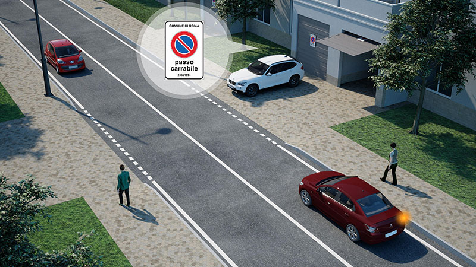

Passo carrabile

Il passo carrabile è una zona della strada che consente l'accesso dei veicoli alle proprietà private laterali alla strada (garage, cortili, ecc.).
Deve essere corredato da apposito segnale, che riporti l'ente e il numero di autorizzazione.
In corrispondenza del passo carrabile è consentita la fermata ma non la sosta (neanche del proprietario).
Deve essere corredato da apposito segnale, che riporti l'ente e il numero di autorizzazione.
In corrispondenza del passo carrabile è consentita la fermata ma non la sosta (neanche del proprietario).